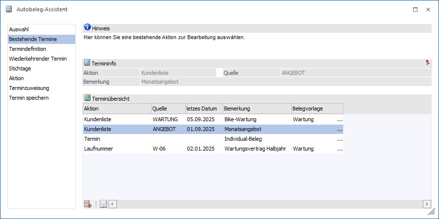
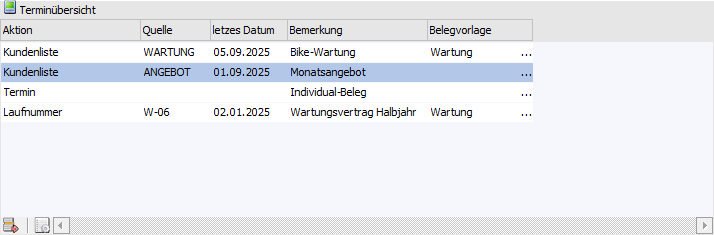
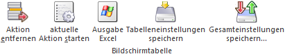

Im Bereich "Bestehende Termine" werden alle bereits angelegten Termine angezeigt und können nach Auswahl editiert werden.

Folgende Einstellungen und Information stehen in diesem Bereich zur Verfügung:
Termininfo

An dieser Stelle wird der aktuell gewählte Termin dargestellt. Alle weiteren Aktionen (z.B. Anwahl des Buttons "Start") erfolgt für diesen Termin.
Terminübersicht

In dieser Tabelle werden alle bereits angelegten Termine dargestellt, können ausgewählt und editiert werden.
Hinweis
Die Speicherung von möglichen Änderungen erfolgt in weiterer Folge immer für den ausgewählten Termin!
Ø Aktion
In dieser Spalte wird die Variante der Belegduplizierung dargestellt und kann angepasst werden:
ü Kundenliste
Ein Quellbeleg
eines Kunden / Lieferanten / Interessenten wird auf eine beliebige Zahl von
Zielkunden / -lieferanten / -interessenten dupliziert. Die Definition von
Quellbeleg und Zielkonten findet über das Programm Autobeleg - Kundenliste statt.
ü Laufnummer
Die Duplizierung
erfolgt für alle Personenkonten bzw. Interessenten, welche einen Ursprungsbeleg
mit der hier zugewiesenen Laufnummer besitzen.
ü Termin
Die Duplizierung erfolgt
für alle im Bereich Terminzuweisung
zugewiesenen Konten / Laufnummern.
Ø Quelle
Handelt es sich um die Aktion "Kundenliste", so wird an dieser Stelle die entsprechende Kundenliste dargestellt bzw. hinterlegt. Bei "Laufnummer" die zugewiesene Laufnummer.
Ø letztes Datum
Hier wird das Intervalldatum der letzten Duplizierung angezeigt.
Beispiel
Eine Rechnung soll immer am 05. eines Monats dupliziert werden. Im September findet dich Duplizierung als solches am 07. statt. Im Feld "letztes Datum" wird der 05.09 angezeigt.
Ø Bemerkung
An dieser Stelle wird die Terminbemerkung angezeigt.
Ø Belegvorlage
Sollen während der Duplizierung des Quellbelegs Veränderungen vorgenommen werden (d.h. Zielbeleg soll sich von Quellbeleg unterscheiden), so kann dieses mit Hilfe einer Belegvorlage erfolgen. An dieser Stelle kann dem Termin eine fixe Vorlage zugewiesen werden.
Hinweis
Die Belegvorlage des Termins hat immer Vorrang vor der im Programm Autobeleg starten hinterlegten Vorlage!
Tabellenbutton

Ø Aktion entfernen
Durch Anwahl dieses Buttons wird der gewählte Termin, nach bestätigen einer Sicherheitsabfrage, gelöscht.
Ø aktuelle Aktion starten
Es wird die gewählte Aktion im Programm Autobeleg starten geladen. Als Beobachtungszeitraum wird hierbei das Einlogdatum verwendet.
Ø Ausgabe Excel
Durch Anwahl des Buttons "Ausgabe Excel" wird der Inhalt der Tabelle an Microsoft Excel übergeben.
Ø Tabelleneinstellungen speichern
Die Spalten einer Tabelle können grundsätzlich an beliebige Positionen verschoben, bzw. in der Breite entsprechend angepasst werden. Durch Anwahl des Buttons "Tabelleneinstellungen speichern" werden die Einstellungen benutzerspezifisch gespeichert und bei dem nächsten Aufruf des Programmpunktes wieder vorgeschlagen.
Ø Gesamteinstellungen speichern…
Im Gegensatz zu "Tabelleneinstellungen speichern" können mit "Gesamteinstellungen speichern" mehrere Tabellenaufbauten gespeichert und nach Wunsch geladen werden. Zusätzlich werden Sonderfunktionen der Tabelle (z.B. "Spalte gruppieren") ebenfalls bei der Speicherung bedacht.